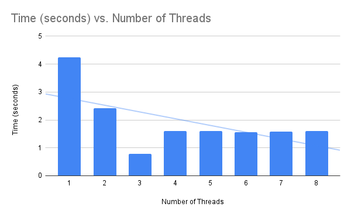

Numpy Multithreaded Matrix Multiplication (up to 5x faster)
Multithreaded matrix multiplication in numpy scales with the number of physical CPU cores available.
An optimized number of threads for matrix optimization can be up to 5x faster than using a single thread to perform the operation.
In this tutorial, you will discover how to benchmark matrix multiplication performance with different numbers of threads.
Let's get started.
How Does Multithreaded Matrix Multiplication Scale With Threads
NumPy is an array library in Python.
NumPy supports many linear algebra functions with vectors and arrays by calling into efficient third-party libraries such as BLAS and LAPACK.
BLAS and LAPACK are specifications for efficient vector, matrix, and linear algebra operations that are implemented using third-party libraries, such as MKL and OpenBLAS. Some operations in these libraries, such as matrix multiplication, are multithreaded.
You can learn more about NumPy and BLAS in the tutorial:
Matrix multiplication is a central task in linear algebra.
Given that numpy supports multithreaded matrix multiplication via an installed BLAS library, we may be curious about it.
For example, how well does the performance of matrix multiplication scale with the number of threads?
How does it scale with the number of logical and physical CPU cores?
We can investigate these questions empirically with benchmark results.
Benchmark Matrix Multiplication with Numbers of Threads
We can benchmark how long it takes to multiply a modestly sized matrix using different numbers of threads.
This can be achieved by configuring the installed BLAS library to use a given number of threads. We can achieve this by setting an environment variable prior to loading the numpy library, either as an environment variable or within our code via the os.environ() function.
For example, the following will configure BLAS/LAPACK to use a single thread on most systems:
...
from os import environ
environ['OMP_NUM_THREADS'] = '1'You can learn more about configuring the number of threads used by BLAS and LAPACK in the tutorial:
We can define a task that benchmarks matrix multiplication for a matrix of a given size.
The task will first create two matrices of a given size filled with random floating point values. These are then multiplied together using the dot() method on the numpy array object. The start time is recorded before the operation and the end time at the end of the operation so that the duration can be calculated.
The task() function below implements this, taking a matrix size as an argument and returning the time taken to two square matrices.
# multiply two matrices and return how long it takes
def task(n):
# record start time
start = time()
# create an array of random values
data1 = rand(n, n)
data2 = rand(n, n)
# matrix multiplication
result = data1.dot(data2)
# calculate the duration in seconds
duration = time() - start
# return the result
return duration
We can then repeat this task many times and calculate the average time taken.
This is important as it avoids statistical fluke results in the results where a given single run may take might longer than expected because the operating system hiccups.
The experiment() function below takes a matrix size and number of repeats as arguments and returns the average time taken to multiply two matrices of the given size. The number of repeats has a modest default value of 10.
# repeat the experimental task and return average result
def experiment(n, repeats=10):
# repeat the experiment and gather results
results = [task(n) for _ in range(repeats)]
# return the average of the results
return sum(results) / repeats
We can then run the experiment for a given number of threads.
In this case, we will fix the matrix size at 5,000x5,000 which is small enough for the experiment to be completed quickly, but large enough to be interesting in many domains.
...
# size of the matrix to test
n = 5000
# perform task and record time
result = experiment(n)
# report result
print(f'{n} took {result:.6f} seconds')
Tying this together, the complete example of the benchmark code configured to use a single thread is listed below.
# benchmark matrix multiplication
from os import environ
environ['OMP_NUM_THREADS'] = '1'
from time import time
from numpy.random import rand
# multiply two matrices and return how long it takes
def task(n):
# record start time
start = time()
# create an array of random values
data1 = rand(n, n)
data2 = rand(n, n)
# matrix multiplication
result = data1.dot(data2)
# calculate the duration in seconds
duration = time() - start
# return the result
return duration
# repeat the experimental task and return average result
def experiment(n, repeats=10):
# repeat the experiment and gather results
results = [task(n) for _ in range(repeats)]
# return the average of the results
return sum(results) / repeats
# size of the matrix to test
n = 5000
# perform task and record time
result = experiment(n)
# report result
print(f'{n} took {result:.6f} seconds')
We can use this code to calculate the average time taken to multiply the fixed-sized matrix with different numbers of threads.
We can change the number of threads via the 'OMP_NUM_THREADS' environment variable at the beginning of the important statements.
I have 4 physical CPU cores in my system, which is double to 8 logical CPU cores with hyperthreading.
Therefore, I will time the operation with 1 to 8 threads.
I recommend updating the range of threads to match the number of logical cores in your system.
Share the results in the comments, I'd love to see what you discover.
Next, let's look at the results
Numpy Multithreading Benchmark Results
The table below summarizes the average time for the matrix multiplication with 1 to 8 Numpy/BLAS threads.
Number of Threads Time (seconds)
1 4.239672
2 2.422825
3 0.782534
4 1.594346
5 1.602179
6 1.559255
7 1.580811
8 1.607222
The plot summarizes the same data, showing the number of threads on the x-axis and the average time taken on the y-axis.

Firstly, we can clearly see a difference between 1 thread and more than one thread.
Using more than one thread results in better performance, confirming that indeed matrix multiplication is using multiple threads when configured.
Secondly, we can see an improvement from 1 to 2 threads of about 1.816 seconds and a further improvement from 2 threads to 3 threads of about 1.640 seconds.
Summarized another way, using 2 threads is about 1.7x faster than using 1 thread. Using 2 threads is about 3x faster than using 2 threads and about 5.4x faster than using one thread.
This shows that adding more CPU cores and in turn threads to matrix multiplication improves performance.
The average speed of the operation dropped from about 4.239 seconds with 1 thread to about 0.782 seconds with 3 threads.
What is fascinating is that performance was worse with 4 threads than with 3 threads.
This highlights that the Python main thread is not blocked during the execution of the function call, but is instead performing computation.
Performance did not improve when adding more threads than there are physical CPU cores, e.g. matching the number of logical CPU cores with hyperthreading. It may suggest that the specific matrix multiplication implementation was not able to take advantage of the 305 lift offered by hyperthreading.
The results suggest that if we are looking to optimize the number of threads for matrix multiplication (at least with matrices around that of the size tested), then we should set the number of BLAS threads to be one minus the number of physical CPU cores.
That is:
- BLAS Threads = (Number of Physical Cores) - 1
It highlights that when using multithreaded BLAS functions like matrix multiplication, it is a good idea to benchmark different numbers of threads on a given system to confirm an optimal configuration.
Takeaways
You now know how to benchmark matrix multiplication performance with different numbers of threads.